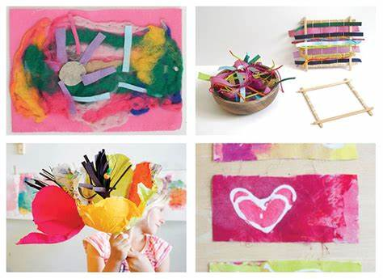
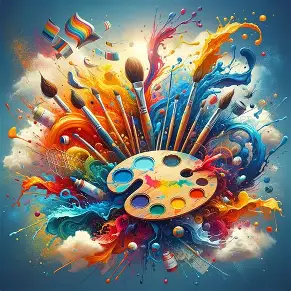

The Magic of Art & Craft: A Creative Journey
Art and craft are more than just hobbies—they are gateways to self-expression, relaxation, and even problem-solving. Whether you're painting on a canvas, molding clay, or folding origami, creativity has the power to transform ordinary materials into extraordinary masterpieces.

Why Art & Craft Matter
Engaging in creative activities offers numerous benefits:
- ✅ Boosts Mental Health – Reduces stress and improves focus.
- ✅ Enhances Motor Skills – Cutting, drawing, and sculpting refine hand-eye coordination.
- ✅ Encourages Innovation – Helps in thinking outside the box.
Popular Art & Craft Techniques
Painting
From watercolors to acrylics, painting allows endless experimentation.

Paper Crafts
Origami, scrapbooking, and quilling turn simple paper into stunning designs.
| Craft Type |
Difficulty Level |
Materials Needed |
| Origami |
Beginner |
Square paper |
| Scrapbooking |
Intermediate |
Glue, photos, decor |
| Quilling |
Advanced |
Strips of paper, glue |
Clay Modeling
Sculpting with clay or playdough is therapeutic and fun for all ages.
Essential Supplies for Beginners
If you're just starting, here’s what you’ll need:
- Paints & Brushes (Acrylic, watercolor)
- Paper & Cardstock (For origami, card-making)
- Scissors & Glue (Basic but crucial!)
- Clay or Playdough (For 3D art)
New! Origami Patterns
Step 1: Fold top corner
Step 2: Crease firmly
Try this old improved technique!
Chemical Safety (For Resin Art)
Always wear gloves when handling H2O2.
Remember
Art and craft are not about perfection—they’re about exploration and joy. Whether you're a beginner or an expert, there’s always something new to create.
"Every artist was first an amateur." — Ralph Waldo Emerson

.jpg)